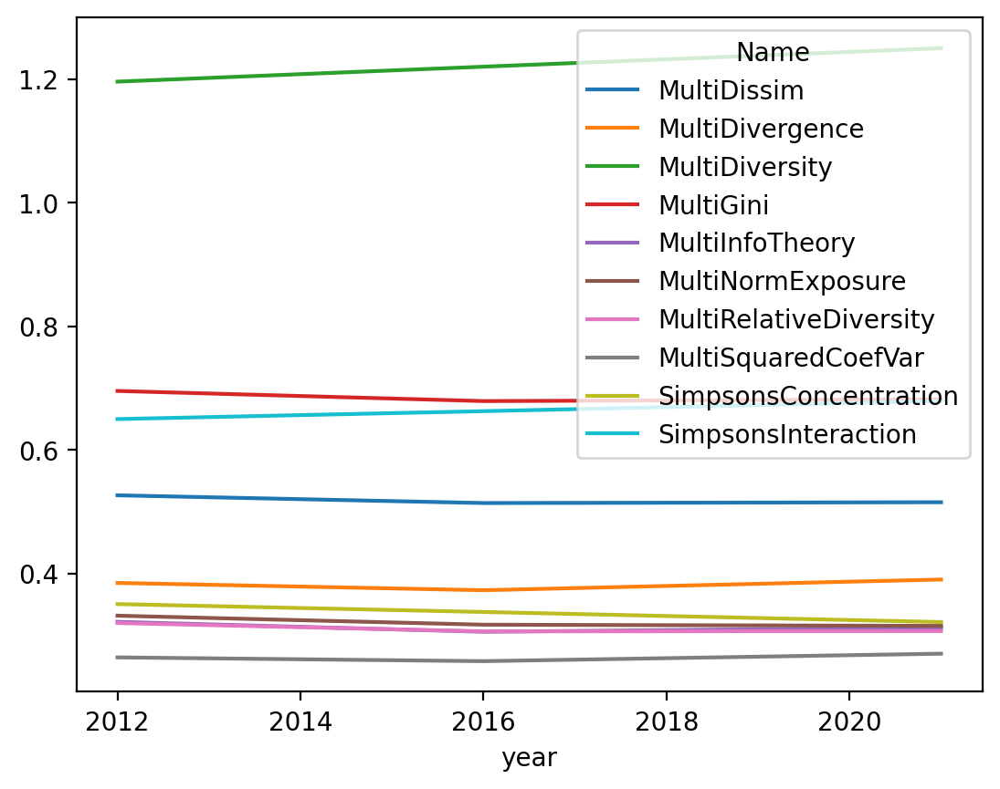
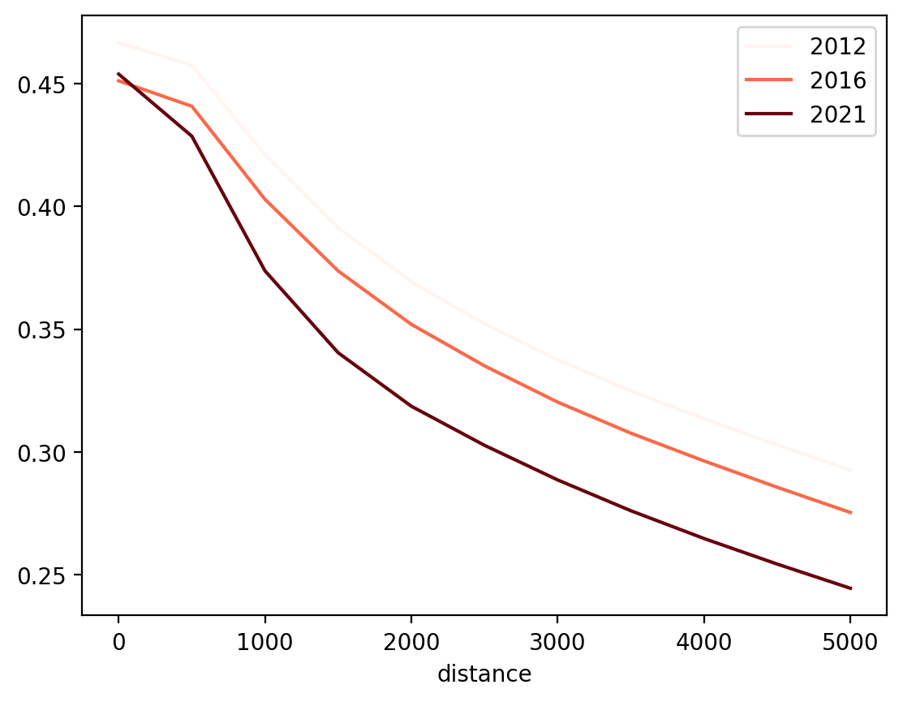
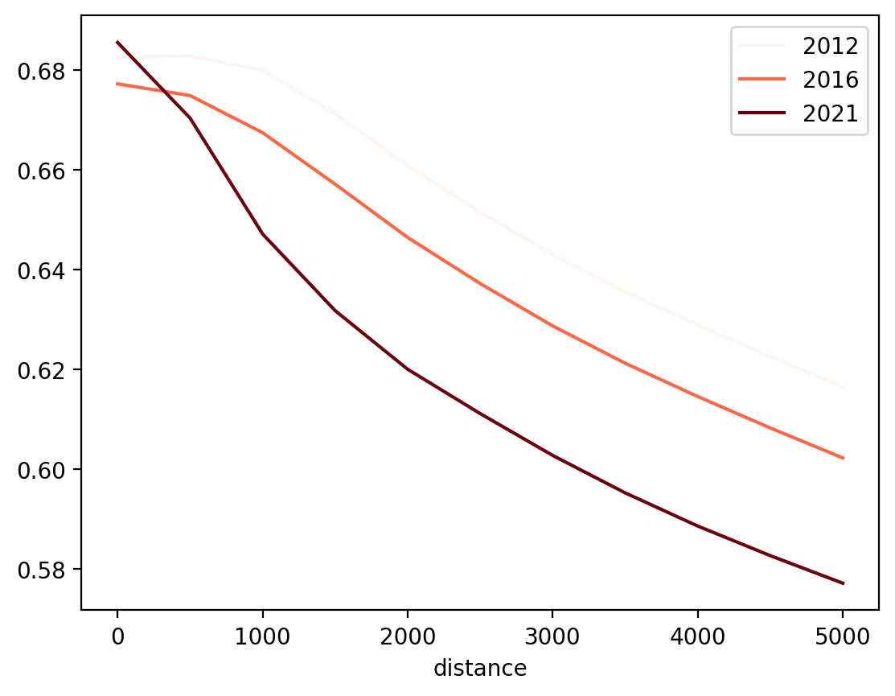

/Users/knaaptime/Dropbox/projects/geosnap/geosnap/io/constructors.py:188: UserWarning: `constant_dollars` is True, but no `currency_year` was specified. Resorting to max value of 2016
warn(
/Users/knaaptime/Dropbox/projects/geosnap/geosnap/io/util.py:275: UserWarning: Unable to find local adjustment year for 2021. Attempting from online data
warn(
/Users/knaaptime/Dropbox/projects/geosnap/geosnap/io/constructors.py:215: UserWarning: Currency columns unavailable at this resolution; not adjusting for inflation
warn(
dc = dc.to_crs(dc.estimate_utm_crs())
dc.head()
geoid
n_total_housing_units
n_vacant_housing_units
n_occupied_housing_units
n_owner_occupied_housing_units
n_renter_occupied_housing_units
n_housing_units_multiunit_structures_denom
n_housing_units_multiunit_structures
n_total_housing_units_sample
median_home_value
...
p_hispanic_persons
p_native_persons
p_asian_persons
p_hawaiian_persons
p_asian_indian_persons
p_edu_hs_less
p_edu_college_greater
p_veterans
geometry
year
0
110010001001
776.0
120.0
656.0
245.0
411.0
776.0
375.0
776.0
1.014441e+06
...
12.808642
0.000000
3.395062
0.0
3.395062
0.0
87.141444
4.938272
MULTIPOLYGON (((320658.461 4309603.540, 320718...
2012
1
110010001002
907.0
110.0
797.0
369.0
428.0
907.0
546.0
907.0
7.830297e+05
...
1.210287
0.000000
3.479576
0.0
3.479576
0.0
86.875612
5.975794
MULTIPOLYGON (((321636.641 4308861.303, 321646...
2012
2
110010001003
589.0
39.0
550.0
391.0
159.0
589.0
221.0
589.0
1.047112e+06
...
4.755245
5.664336
7.552448
0.0
7.552448
0.0
97.289448
8.181818
MULTIPOLYGON (((320967.686 4308858.767, 320969...
2012
3
110010001004
552.0
102.0
450.0
256.0
194.0
552.0
166.0
552.0
1.047112e+06
...
1.612903
0.000000
6.854839
0.0
6.854839
0.0
85.314685
4.334677
MULTIPOLYGON (((320608.256 4307826.451, 321099...
2012
4
110010002011
0.0
0.0
0.0
0.0
0.0
0.0
0.0
0.0
NaN
...
4.442808
0.000000
12.272950
0.0
12.272950
0.0
49.382716
0.000000
MULTIPOLYGON (((319785.287 4309141.585, 319879...
2012
5 rows × 58 columns
from IPython.display import IFrame
7.1 Racial Segregation over Time
groups = ['n_nonhisp_white_persons', 'n_nonhisp_black_persons', 'n_hispanic_persons', 'n_asian_persons']
/Users/knaaptime/Dropbox/projects/geosnap/geosnap/visualize/mapping.py:170: UserWarning: `proplot` is not installed. Falling back to matplotlib
warn("`proplot` is not installed. Falling back to matplotlib")
# removing the GlobalDistortion coef lets us see what's happening with the rest of the indicesmulti_by_time.iloc[1:].T.plot()
<Axes: xlabel='year'>

Most indices are changing little over time, but most have followed the same trend with a mild drop in 2016 prior to a slight increase in the latest available data
One that isn’t, is SimpsonsConcentration, which is increasing over time. Another index that bucks the trend is SimpsonsInteraction, which is decreasing over time (corresponding with an increse in segregation). The divergence between indices tells us that segregation may be changing in different ways across its different dimensions.
from geosnap.analyze.segdyn import singlegroup_tempdyn
singlegroup_tempdyn?
Signature:
singlegroup_tempdyn(
gdf,
group_pop_var=None,
total_pop_var=None,
time_index='year',
n_jobs=-1,
backend='loky',**index_kwargs,)Docstring:
Batch compute singlegroup segregation indices for each time period in parallel.
Parameters
----------
gdf : geopandas.GeoDataFrame
geodataframe formatted as a long-form timeseries
group_pop_var : str
name of column on gdf containing population counts for the group of interest
total_pop_var : str
name of column on gdf containing total population counts for the unit
time_index : str
column on the dataframe that denotes unique time periods, by default "year"
n_jobs : int, optional
number of cores to use for computation. If -1, all available cores will be
used, by default -1
backend : str, optional
computation backend passed to joblib. One of {'multiprocessing', 'loky',
'threading'}, by default "loky"
Returns
-------
geopandas.GeoDataFrame
dataframe with unique segregation indices as rows and estimates for each
time period as columns
File: ~/Dropbox/projects/geosnap/geosnap/analyze/segdyn.py
Type: function
segs_single.T[['AbsoluteClustering', 'Isolation', 'SpatialProxProf', 'Interaction']].pct_change(periods=5) # we should only compare non-overlapping intervals
Name
AbsoluteClustering
Isolation
SpatialProxProf
Interaction
year
2012
NaN
NaN
NaN
NaN
2016
NaN
NaN
NaN
NaN
2021
NaN
NaN
NaN
NaN
Between the sampling periods 2008-2012 and 2013-2017: - the isolation index increased by 5.2% - the absolute clustering index increased by 12.4%.
- the spatial proximity profile increased by 17.6%
Between the sampling periods 2009-2013 and 2014-2018: - the isolation index increased by 7.9% - the absolute clustering index increased by 18.2% - the spatial proximity profile increased by 21.9%
7.2 Space-Time Dynamics
from segregation.singlegroup import Entropy
d = segdyn.spacetime_dyn(dc, singlegroup.Entropy, group_pop_var='n_nonhisp_black_persons', total_pop_var='blackwhite', distances=list(range(500,5500,500)))
d.plot(cmap='Reds')
<Axes: xlabel='distance'>

Entropy is falling the fastest at large scales (the gap is wider on the right-hand side of the graph than the left-hand side)
iso = segdyn.spacetime_dyn(dc, singlegroup.Isolation, group_pop_var='n_nonhisp_black_persons', total_pop_var='blackwhite', distances=list(range(500,5500,500)))
iso.plot(cmap='Reds')
<Axes: xlabel='distance'>

Isolation is growing the fastest at large scales (the gap is wider with larger distances on the right). Isolation is actually growing at the smallest scale
The Python dashboarding ecosystem is evolving quickly, so we won’t opine on which platform or toolset is best. But if you have a personal favorite, geosnap is performant to power an urban analytics dashboard on-the-fly. The example below wraps a simple streamlit interface around the workflow above that lets us explore every metro region quickly